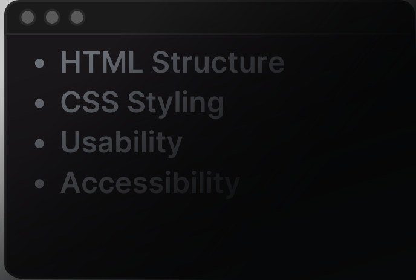

Introduction
We’ve selected a website example to demonstrate the power of clean, well-structured code. In this guide, you’ll learn the importance of organizing your HTML and CSS, while also exploring how a website’s usability and accessibility play a crucial role in creating a seamless user experience. After all, these elements are what truly define a website’s quality and impact!
www.art.yale.edu
The Yale School of Art website despite its lackluster and chaotic design, serves as an excellent case study for understanding the importance of clean code. By examining its structure, styling, and overall user experience, we can uncover valuable insights on what to do—and what not to do—when building a website.